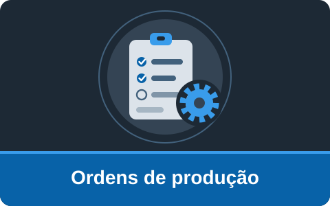
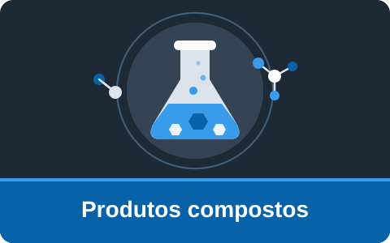
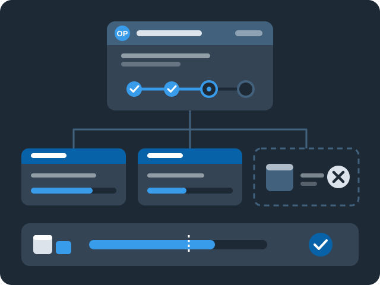
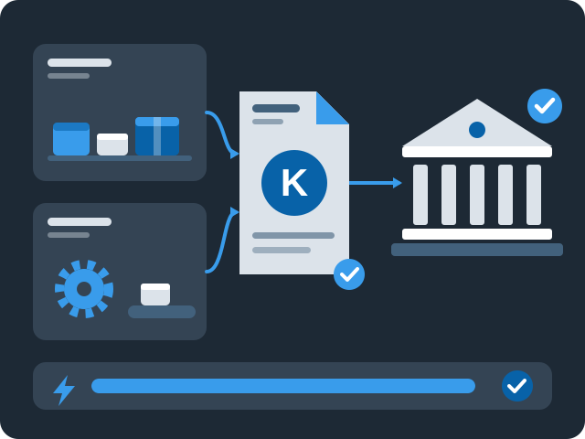

Gestão de Produção com eficiência e qualidade!
Melhore sua performance em todas as etapas dos processos de produção, elevando sua produtividade e seus rendimentos.
Conheça nossas funcionalidades



Integre todos os setores do seu negócio com nossas ferramentas!

Ordens de Produção
Para cada produto que você irá produzir, deve criar uma
ordem de produção. Dessa forma, você acompanha as etapas
de cada OP, facilita o controle de estoque e a avaliação
de qualidade dos itens.
Com nosso ERP em Nuvem, também é possível criar subordens
de produção com base na primeira OP cadastrada. Isso
ocorrerá quando o produto utilizado como matéria-prima
de um item também precisa ser produzido pela empresa.
Outra importante funcionalidade é o descarte de itens
produzidos, que ocorre quando a mercadoria produzida
não obtiver a qualidade mínima estipulada pela empresa
para comercialização.

Produtos Compostos
Tenha estoque e demais módulos do seu negócio totalmente
integrados ao seu controle de produção.
O Sistema de Controle de Produção do SIGE Cloud permite
cadastrar produtos acabados ou compostos, informando
todos os itens que os compõem, como matérias-primas
e subprodutos.
Uma vez finalizada a Ordem de Produção, automaticamente
é efetuada a baixa da matéria-prima no estoque e a
entrada dos itens produzidos.
Controle de Qualidade
Você quer oferecer o melhor a seus clientes e que eles
tenham sua empresa como referência em qualidade?
Ao contar com o módulo de PCP do SIGE Cloud, você tem
ferramentas de fácil utilização para avaliar a qualidade
de cada item produzido.
Através de um checklist, criado por você e sua equipe,
com todos os itens que devem ser verificados em determinado
produto, é possível informar ao sistema se o item atingiu
a qualidade estabelecida para que sua comercialização
seja possível.
Quer que sua empresa seja referência em qualidade?
Conte com mais esse recurso disponível no SIGE Cloud.

Simulador de Produção
Se você está buscando formas de controlar a previsão
de produção e o consumo de matérias-primas, em nosso
Simulador de Produção você encontra!
O Sistema ERP Online SIGE Cloud conta com uma infinidade
de recursos criados e constantemente atualizados para
melhorar sua experiência na Gestão Empresarial.
Um dos principais métodos de controle e acompanhamento
que disponibilizamos é o módulo de relatórios, dentre
eles o Relatório de PCP chamado Simulador de Produção.
Trata-se de um gráfico usado para ilustrar o avanço
do processo produtivo, em que é possível monitorar
demandas de insumos e demais recursos a serem utilizados
para a execução de ordens de produção.

Bloco K - SPED Fiscal
Se você trabalha com Produção, já sabe que todas
as empresas do segmento de industrialização podem
estar obrigadas a apresentar seus relatórios de
Estoque e Produção no SPED Fiscal.
Em nosso ERP esse arquivo é preparado em instantes,
contemplando as exigências que envolvem o Bloco K.
Essa mudança fiscal obriga os gestores a atentarem-se
mais ao gerenciamento de seus estoques e organizar-se
fiscalmente.
Por isso, o melhor caminho para adaptar-se a essa
mudança é contar com um Software Integrado de Gestão
Empresarial, como o SIGE Cloud.